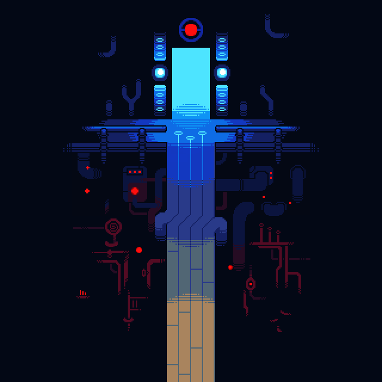

ROTEIRO
* Durante UNDERTALE, o protagonista encontra várias áreas, locais e personagens diferentes.
* Cada área e até certos personagem possuem trilhas sonóras únicas, e alta significância a história do jogo.
-
Ruínas
-
 * As Ruínas são a primeira área do jogo, encontrada após o protagonista cair num buraco no Monte Ebott antes dos eventos do jogo.
* As Ruínas são a primeira área do jogo, encontrada após o protagonista cair num buraco no Monte Ebott antes dos eventos do jogo.
* Há muitos quebra-cabeças e armadilhas pelas Ruínas, bem como um excesso de folhas vermelhas e videiras espalhadas por quase todas as áreas desta localidade. Um pequeno rio atravessa as Ruínas, e seu chão de coloração roxa-escura se caracteriza por pequenos "caminhos" com um chão de cor mais clara.
No fim das Ruínas, o protagonista encontra uma casa, que é a residência de Toriel. Nesta casa, ele pode encontrar uma cozinha, uma sala de estar e um corredor com três quartos.
O primeiro quarto é reservado para o protagonista, onde ele pode dormir, o segundo quarto é o quarto de Toriel, que ele pode inspecionar, e um terceiro quarto, trancado.
* Na casa, o protagonista também pode encontrar escadas. Essas escadas levam ele para a saída das Ruínas, que Toriel proíbe ele à entrar.
Se o protagonista falar com a Toriel sobre sair do subsolo, ela irá descer as escadas para destruir a saída. Ele pode interromper ela, e convencer ela a deixar ele sair. -
Snowdin
-
 * Snowdin é a segunda área do jogo, encontrada após o protagonista sair das ruínas.
* Snowdin é a segunda área do jogo, encontrada após o protagonista sair das ruínas.
* Snowdin pode ser dividida em duas partes, a Floresta Snowdin e a Cidade Snowdin. A Floresta Snowdin é uma floresta de clima frio e está praticamente coberto com gelo e neve, bem como várias árvores em toda parte da região.
Na entrada de Snowdin, o protagonista encontra Sans, que vira seu amigo, e avisa ele sobre o seu irmão da Guarda Real, Papyrus. Snowdin possui numerosos membros da Guarda Real, incluindo os membros caninos. A saída da cidade leva o protagonista à Waterfall a pé.
Depois de resolver vários quebra-cabeças colocados por Papyrus e derrotar os cães da Guarda Real, o protagonista chega na cidade, onde há vários habitantes.
* No final da Cidade Snowdin, o protagonista encontra Papyrus, e deve tentar convencer ele a deixar-lo passar.
Se o protagonista é derrotado, Papyrus o captura e o "aprisiona" em sua galpão com barras largas, permitindo que o protagonista saia e tente novamente.
Após Papyrus ser derrotado, o protagonista pode deixar Snowdin e progredir para Waterfall. -
Waterfall
-
 * Waterfall é a terceira área do jogo, encontrada diretamente depois de Snowdin.
* Waterfall é a terceira área do jogo, encontrada diretamente depois de Snowdin.
* Waterfall é um local úmido, cheio de lagoas, cachoeiras e muita água. Caracteriza-se por suas cores temáticas de azul, preto e roxo, além de ser um lugar bastante chuvoso. As Flores de Eco e a água da região apresentam uma cor azul-verde e azul-clara, que proporciona luz nas regiões escuras, junto com lanternas e cristais luminosos.
* Durante o estar do protagonista em Waterfall, ele é caçado por Undyne, e tem que se esconder dela. Eventualmente, durante um encontro com Undyne, ela encurrala o protagonista e corta a ponte debaixo do pé dele, fazendo que ele caia até o lixão.
* No fim do lixão, o protagonista encontra o Mad Dummy, um boneco possuído por um fantasma, que tenta impedir-lo, até ele ser derrotado acidentalmente por Napstablook.
* Após isso, o protagonista segue em frente, continuando por Waterfall, até que no fim da área, ele é encontrado por Undyne e precisa correr dela.
-
Hotland
-
* Hotland é a quarta área do jogo, encontrada após o protagonista é perseguido pela Undyne até a entrada de Hotland.
* Hotland é um local cheio de lava e calor. Guardas Reais enviados por Undyne patrulham certos corredores da região à procura do protagonista. Espalhados pela área são elevadores que levam a diversos lugares da região.
* Durante Hotland, o protagonista pode encontrar vários quebra-cabeças feitos por Alphys, feitos para impedir seu progresso.
* Em Hotland, o protagonista pode encontrar e entrar no laboratório de Alphys, onde ele encontra ela e Mettaton. Após o encontro com Mettaton, Alphys melhora o telefone do protagonista e guia ele por Hotland, onde ele tem vários encontros com Mettaton.
* O protagonista acaba encontrando Muffet, tentando impedir ele de sair, onde ele deve convencer ela a deixar ele passar.
Logo após o encontro com Muffet, o protagonista se depara com o Resorte MTT, onde fica a saída de Hotland para o Core. -
Core
-
 * O Core é a quinta e penúltima área do jogo, encontrada no fim de uma ponte no Resorte MTT.
* O Core é o núcleo do subsolo, que fornece eletricidade mágica para os seus residentes. Toda a estrutura do Núcleo foi projetada para que os quartos no interior possam mudar de posição, a fim de fazer o protagonista se perder. O Core é resfriado por gelo enviado de Snowdin, que passa por Waterfall e vai para o reservatório de magma dele e assim o resfria.
* Durante o estar do protagonista no Core, há vários monstros enviados por Mettaton para capturar ele.
No fim do Core, o protagonista tem um encontro final com Mettaton, onde ele grava a batalha com ele ao vivo para os moradores do subsolo.
* Após a sua batalha com Mettaton, você pode seguir em frente para o corredor com a saída do Core, onde Alphys te interrompe. Após uma curta conversa, ela te deseja sorte, e você pode seguir em frente para a Nova Casa. -
Nova Casa
-

 * A Nova Casa é a sexta e última área do jogo, encontrada após você sair de um elevador.
* A Nova Casa é a sexta e última área do jogo, encontrada após você sair de um elevador.
* Nova Casa é um cenário cinza, ocupada por longos corredores e o que parece ser uma grande cidade no fundo. Seguindo em frente, o protagonista encontra uma casa, muito parecida com a casa de Toriel. Entrando nela, ele descobre que ela está vazia, com ninguém morando nela.
* Após sair da Nova Casa, o protagonista segue um caminho, até encontrar um elevador. Esse elevador leva o protagonista até o Último Corredor, um corredor claro, iluminado pela luz do sol passando pelas janelas.
Nesse corredor, o protagonista encontra o Sans, que te julga baseado em suas escolhas ao longo do caminho.
Após julgar o protagonista, o Sans aparentemente desaparece, e o protagonista pode seguir em frente para a Sala do Trono.
* Na Sala do Trono, o protagonista encontra o rei dos monstros, Asgore.
Asgore curtamente conversa com o protagonista, e depois leva ele para a sala da barreira.
Lá, Asgore inicia uma batalha com o protagonista.